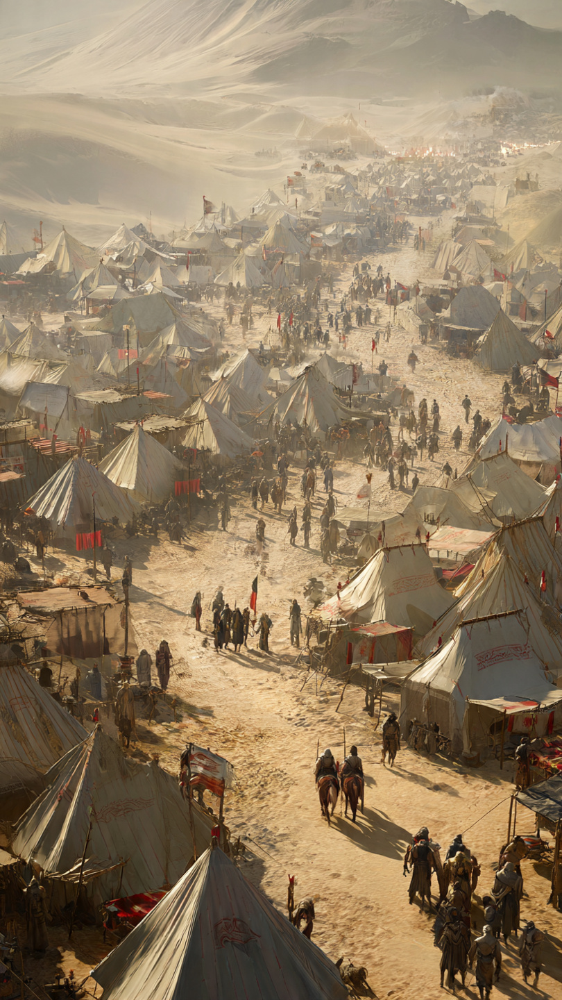

نعيم بن مسعود.. الرجل الذي فرّق جيش الأحزاب دون قتال
في السنة الخامسة للهجرة، واجه المسلمون موقفًا صعبًا في المدينة المنورة.
فقد اجتمعت قبائل كثيرة لمحاربة المسلمين فيما عُرف باسم غزوة الأحزاب.
كان جيش الأحزاب كبيرًا، وشعر المسلمون بخطر شديد، فحفروا الخندق حول المدينة كخطة دفاعية أشار بها الصحابي سلمان الفارسي رضي الله عنه.
وفي ذلك الوقت ظهر رجل كان له موقف سيغير مجرى الأحداث.
كان اسمه نعيم بن مسعود الأشجعي.
كان نعيم يعيش بين قومه، ولم يكن المسلمون يعلمون بعد أن قلبه قد تغير.
فقد ذهب إلى النبي ﷺ وأعلن إسلامه.
قال نعيم للنبي ﷺ إنه يريد أن يساعد المسلمين، لكنه لم يكن يملك جيشًا أو سلاحًا.
فقال له النبي ﷺ بمعنى الكلام:
"إنما أنت رجل واحد، فخذّل عنا إن استطعت."
خرج نعيم يفكر في طريقة تساعد المسلمين.
كان يعلم أن مواجهة جيش الأحزاب بالقوة المباشرة صعبة، لكنه عرف أن الخلاف بين القبائل قد يكون نقطة ضعف.
فبدأ يستخدم الحكمة والكلام بحذر.
ذهب إلى كل طرف، وتحدث معهم بطريقة جعلتهم يشكون في بعضهم البعض.
لم يكن هدفه الخداع لمجرد الخداع، بل كان في موقف حرب، وكان يريد حماية المسلمين من خطر كبير.
بدأت الخطة تنجح...
وبدأ الشك يدخل بين الأحزاب التي جاءت متحدة لهدف واحد.
لكن هل يستطيع رجل واحد أن يغير نتيجة معركة كبيرة؟
📷 الصورة رقم 1
بدأ نعيم بن مسعود تنفيذ خطته بحكمة كبيرة.
ذهب إلى قريش، وأخبرهم أن حلفاءهم قد يتخلون عنهم إذا اشتد القتال، وأن عليهم أن يطلبوا ضمانات قبل الدخول في المعركة.
ثم ذهب إلى بني قريظة، وكان بينهم وبين المسلمين موقف معروف في تلك الفترة، وأخبرهم أن قريشًا قد تتركهم وحدهم إذا تغيرت الأمور.
بدأ كل فريق يفكر:
"هل يمكن أن يتركونا وحدنا؟"
وهكذا بدأ التحالف القوي يضعف من الداخل.
فقد كان اجتماعهم قائمًا على هدف واحد، لكن الثقة بينهم بدأت تقل.
وفي الوقت نفسه، كان المسلمون يدعون الله ويثبتون أمام الحصار الصعب.
كانوا يعلمون أن الأسباب مهمة، لكن النصر بيد الله وحده.
مرت الأيام، واشتد الحصار على المدينة.
لكن جيش الأحزاب بدأ يشعر بالتعب والقلق.
لم تعد الأمور كما خططوا لها في البداية.
فالخلافات التي ظهرت بينهم جعلت كل طرف يفكر في مصلحته.
ثم جاء أمر الله.
فأرسل الله ريحًا شديدة جعلت الأحزاب في حالة اضطراب، وأصبح البقاء في مكانهم أصعب.
أدركوا أن الحصار لن يستمر، فبدأوا بالرحيل.
وهكذا انتهت المعركة دون مواجهة كبيرة داخل المدينة.
وكان لنعيم بن مسعود دور مهم في تغيير مجرى الأحداث بالحكمة والتفكير.
📷 الصورة رقم 2

بعد انتهاء غزوة الأحزاب، عرف المسلمون قيمة الموقف الذي قام به نعيم بن مسعود.
فقد أثبت أن النصر لا يكون دائمًا بكثرة العدد أو قوة السلاح، بل قد يكون بالحكمة وحسن التصرف.
لم يكن نعيم يملك جيشًا كبيرًا، لكنه امتلك عقلًا راجحًا وإيمانًا جعله يبحث عن أفضل طريقة لمساعدة المسلمين.
وقد أظهرت قصته أن الإنسان قد يكون سببًا في تغيير أحداث كبيرة عندما يستخدم ما لديه من قدرات في الخير.
لم يكن دور نعيم قائمًا على القوة البدنية، بل على معرفة طبيعة الناس وكيفية التعامل مع المواقف الصعبة.
وهذا يعلمنا أن لكل إنسان موهبة يمكن أن يستخدمها لنفع الآخرين.
فليس كل الأبطال يحملون السيوف...
بعضهم يحملون الحكمة وحسن التفكير.
كما تعلمنا قصته أهمية الصدق مع الله.
فقد كان نعيم في بداية الأمر من خارج صفوف المسلمين، ثم عندما عرف الحق اختار أن يقف معه.
وأصبح بعد ذلك من الصحابة الذين لهم مواقف عظيمة في نصرة الإسلام.
وبقيت قصته تذكر الناس بأن الإنسان الواحد قد يصنع فرقًا كبيرًا عندما يضع قدراته في المكان الصحيح.
🏹📖 انتهت القصة 📖🏹
العبرة:
الحكمة وحسن التفكير قد يحققان ما لا تستطيع القوة وحدها تحقيقه، فاستخدم ما أعطاك الله في الخير.